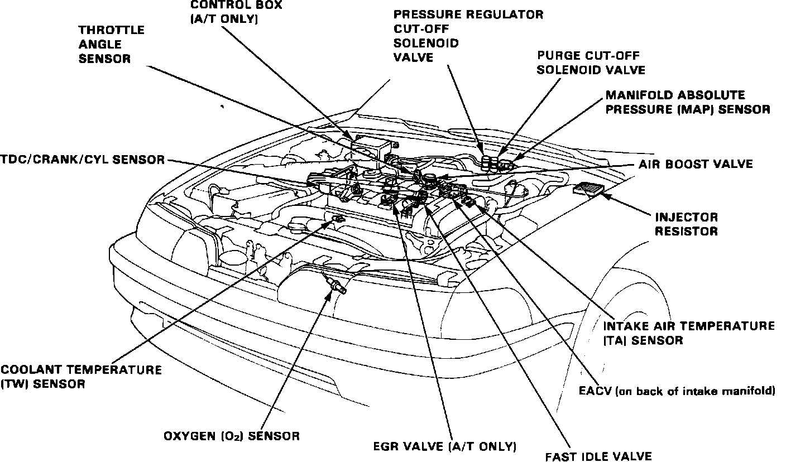

Throttle Position Sensor: Locations
Engine Management Components:

AIR BOOST VALVE
The Air Boost Valve is mounted on the front side of the intake manifold, just to the right of the dashpot.
FAST IDLE VALVE
The Fast Idle Valve is located under the throttle body assembly at the intake manifold inlet.